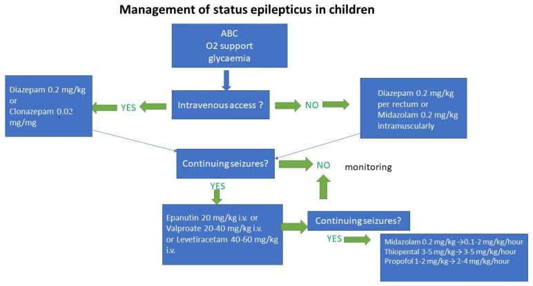

Cláudio Honor: 40 minutos e a pergunta errada
Caso clínico · frame de porta · raciocínio de status
📋 CASO · Cláudio Honor
Após estabilizar → qual a abordagem medicamentosa inicial?
1. O caso: Cláudio Honor
Cláudio Honor, 60 anos, bancário, após um dia pesado de trabalho, é levado às pressas ao PS pelos colegas. Chega com abalos clônicos generalizados e perda da consciência. Os amigos contam evolução de cerca de 40 minutos: caiu no chão, deu um grito e ficou todo rígido.
Há cerca de 6 meses, recebeu diagnóstico de epilepsia secundária. Negava-se a tomar o antiepiléptico prescrito — não-adesão.
2. O frame muda: chegou em crise
Isso não é consulta eletiva de primeira crise. O paciente chegou em crise, ainda com abalos motores e 40 minutos de evolução. O raciocínio vira estado de mal epiléptico / status epiléptico.
Quem "pega alguém em crise" entra no raciocínio de status: tempos, camadas de fármaco e exceções — o núcleo operacional desta estação.
3. Estabilizar primeiro
Antes (e junto) do raciocínio da crise: via aérea e circulação. Sem isso, qualquer "remédio de status" é teatro.
4. A pergunta certa
Após a estabilização clínica, a conduta a decidir é: qual a abordagem medicamentosa inicial?
A tentação da não-adesão é pensar "vou repor o AED de casa". A pergunta operacional é outra: o que tira este homem da crise agora?

40 min + abalos ainda presentes não pedem "só repor o comprimido de casa" como 1ª resposta — pedem raciocínio de status e 1ª linha parenteral.
Não-adesão explica por que entrou em status; não substitui o protocolo de parar a crise. Quem erra o frame (pensa em "trocar o AED de casa") atrasa o que para a crise agora.
Paciente em crise com TCG longa = raciocínio de status. Estabiliza VA/circulação; a pergunta de 1º fármaco vem depois.